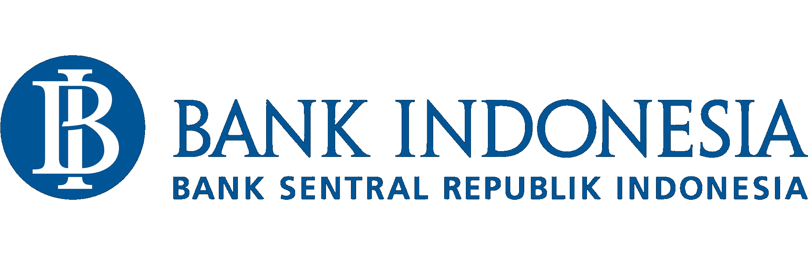
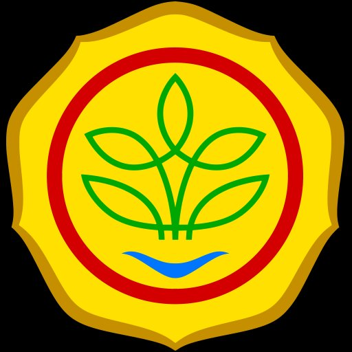

Setiap porsi makan bergizi gratis yang diterima anak Indonesia dapat ditelusuri kembali hingga petani yang menanamnya.
Supply chain MBG senilai ratusan triliun rupiah masih gelap — tidak ada yang tahu asal-usul bahan pangan yang sampai ke piring anak-anak kita.
Dari mana bahan makanan MBG? Melewati tangan siapa? Tidak ada sistem yang melacak perjalanan pangan dari sawah ke sekolah.
Riset IPB: 32% petani tidak tercatat dalam sistem, 68% penerima subsidi bukan petani aktif. Potensi fraud signifikan.
Bappenas: 23-48 juta ton pangan terbuang setiap tahun — senilai ratusan triliun rupiah akibat rantai distribusi tidak efisien.
Data real dari BPS dan PIHPS Kemendag 2026 menunjukkan gap yang bisa diselesaikan NusaPangan.
NusaPangan bukan 5 produk terpisah — melainkan satu ekosistem terintegrasi untuk seluruh rantai pasok MBG.
Verifikasi Dukcapil, credit scoring digital, akses KUR, income tracking.
Lacak beras dari sawah ke piring siswa. Scan QR, lihat seluruh journey. Blockchain audit trail.
Price Radar harga real PIHPS, MBG Monitor, early warning inflasi.
Petani jual langsung ke SPPG — memangkas rantai distribusi, hemat ~18%.
LSTM prediksi harga. Matching otomatis surplus Banten → defisit DKI Jakarta.
Sensor suhu/GPS real-time. Algoritma Genetika optimasi rute distribusi.
NusaPangan memperkuat transparansi dan efisiensi supply chain Makan Bergizi Gratis.

